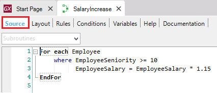

The Procedure Source is the section where the code corresponding to the Procedure object logic is written.
The style of programming is procedural (imperative) so the source will be a succession of statements (commands) where the order is important. The order in which they are specified will be the order in which they are executed, with some exceptions.
E.g.: Suppose you need to define a process to increase (by 15%) the salary of all the employees who have been working for more than ten years in the company. Therefore, he/she defines the following Procedure with the shown Source:

As you can see, next to the For Each command a Base Transaction is specified (Employee). As a base transaction is the name of the transaction whose related physical table you want to navigate, GeneXus will determine to navigate the Employee physical table (which contains all the information of each company employee, including the attributes EmployeeSeniority and EmployeeSalary). Besides, GeneXus will determine to filter those employees whose seniority exceeds 10 years and then, their salary will be updated, raising it by 15 percent.
As in any imperative language, in the Procedure's Source the following types of commands are available:
...as well as specific commands with the following objectives:
Subroutines can be defined at the end of the Source and invoked from the desired place of the code, using the appropriate command (Do).
It is also possible to write to the database using the Business Component concept. See Update the database directly with commands VERSUS using Business Components.
Sometimes Procedures are needed to print data as well. To learn about printing see Procedure Layout.